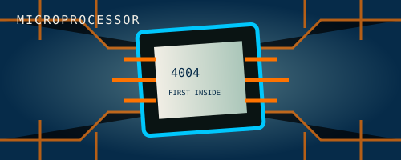
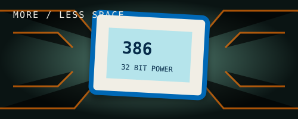
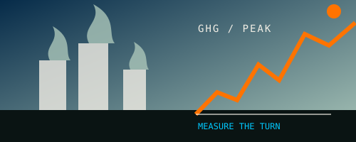
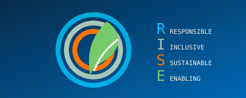
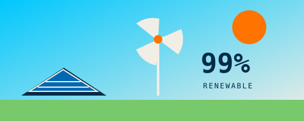

1968
Intel Founded
The beginning of a company built around purposeful invention.
Robert Noyce and Gordon Moore rename the newly formed company NM Electronics to Intel Corporation, laying the foundation for decades of technological innovation.
Explore the milestones shaping a more responsible future for technology, from the first microprocessor to our net-zero ambition.
Explore the timelineA living commitment
Hover over a milestone to see how innovation and responsibility have grown together.
1968
The beginning of a company built around purposeful invention.
Robert Noyce and Gordon Moore rename the newly formed company NM Electronics to Intel Corporation, laying the foundation for decades of technological innovation.

1971
A smaller footprint opens up a bigger world of possibility.
Intel debuts the 4004, the world's first commercial microprocessor, igniting the microprocessor revolution and propelling the future of computing devices.
1978
The architecture that helped define modern computing.
Launch of the 8086 processor, establishing the x86 architecture that drives countless PCs and servers in the modern era.

1985
More power and capability, packed into less space.
Intel introduces the 386 processor with 32-bit architecture, ushering in a new era of performance and multitasking for personal computers.

2006
A turning point: measure the impact, then change the trajectory.
This year marks Intel's highest annual greenhouse gas emissions for operations. Over subsequent years, Intel invests heavily in chemical abatement, renewable energy, and energy-efficient manufacturing to reverse this trend.

2020
Responsible, Inclusive, Sustainable, Enabling.
Intel launches its RISE strategy and 2030 goals, aiming to drive industry-wide progress on climate action, water stewardship, and waste reduction.
2022
A clear destination for emissions across global operations.
Intel announces its commitment to achieve net-zero greenhouse gas emissions across its global operations by 2040, building on years of environmental initiatives.

2023
99% renewable electricity worldwide.
The company achieves 99% renewable electricity usage worldwide, helping to drastically lower carbon emissions and driving progress toward Intel's long-term sustainability goals.
2024
Collaboration turns ambitious goals into shared action.
Intel hosts its first Sustainability Summit, uniting suppliers, government officials, and industry leaders to collaborate on next-generation sustainable semiconductor manufacturing.